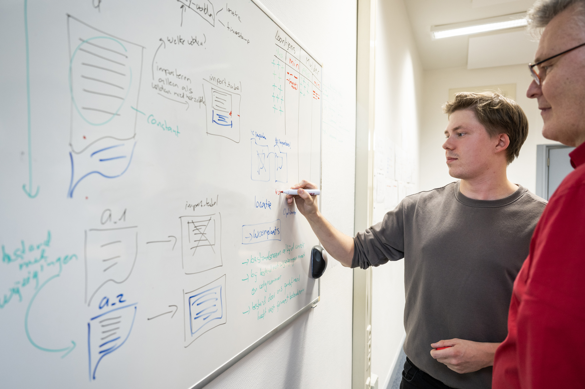
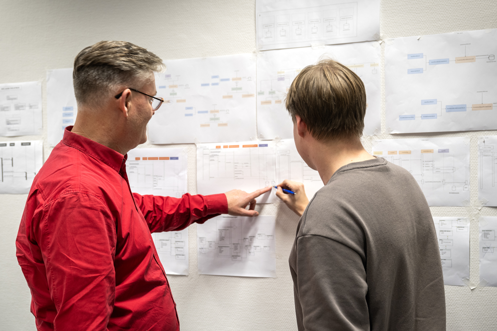
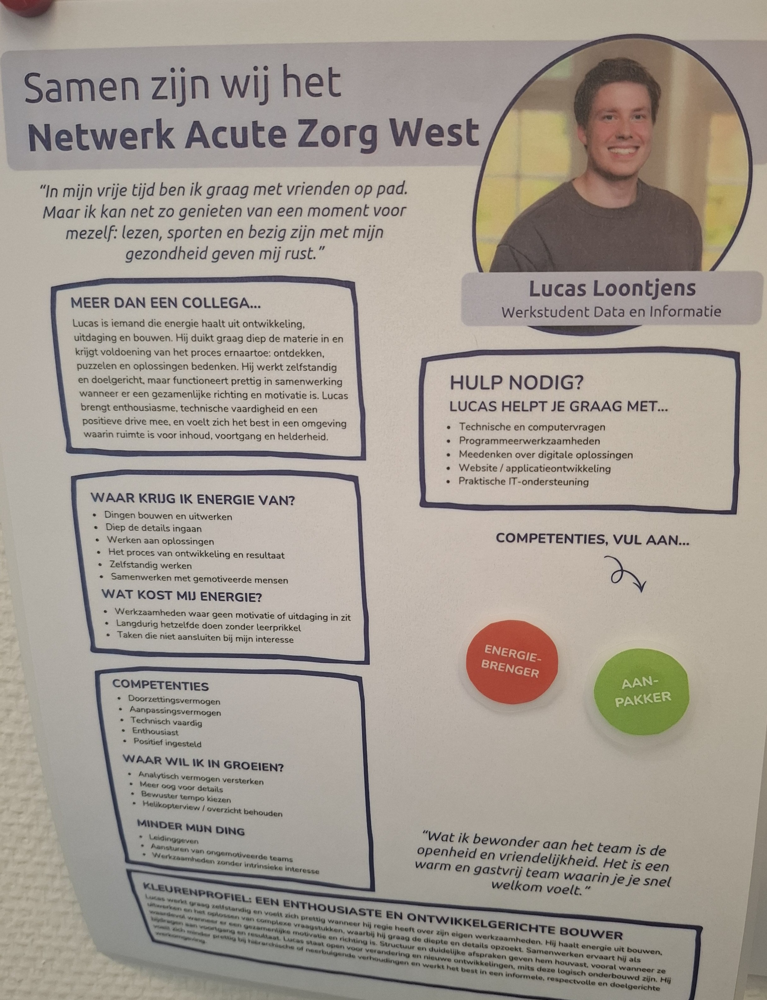

In de periode van september 2025 t/m februari 2026 heb ik mijn stage gedaan bij de organisatie Netwerk Acute Zorg West (NAZW). Ik heb zes maanden lang gewerkt als software engineer in het domein Data & Informatie, daar heb ik een applicatie van VBA uitgefaseerd en in C#/.NET ingefaseerd. Hier wil ik vertellen hoe ik mijn persoonlijk leiderschap en persoonlijke profilering heb vormgegeven in die periode.
In de tijd dat ik opzoek was naar een stage werkte ik bij ChipSoft. Ik wilde heel graag ergens anders stage doen, dat wil ik altijd wel. Ik vind het namelijk erg belangrijk om bij verschillende bedrijven te werken, om te weten hoe elk bedrijf nou verschilt van elkaar. Wat betreft manier van werken, maar ook connecties maken. Een maat van mij die ik kende die wist dat ik bij ChipSoft werkte en wist ook dat ik een keer stage wilde doen ergens anders. Ik heb wiskunde bijles van Arnaud gehad en ook heb ik voor Arnaud de Slagtvelt applicatie gebouwd, dus die wist hoe ik te werk ging en zag het wel zitten dat ik erbij kwam als stagiaire. De afdeling Data & Domein waar ik toen terecht wilde al groeien in de vorm van stagiaires, dus daar paste ik bij. De opdracht was een oude applicatie die Arnaud al vijf jaar gebouwd uitfaseren uit VBA en in C# infaseren. Weer een hele andere tak om software opnieuw te herbouwen. En het sloot perfect aan bij wat ik wilde doen, Software Engineer. We gingen samen intensief samenwerken en de hele architectuur herzien. VBA kende heel veel modernere manieren niet die we op school wel leren bijvoorbeeld: geen polymorphisme, geen inheritance, geen override geen reflection en geen libaries. Dus aan ons om samen een nieuw project neer te zetten. In deze stage periode had ik de leerdoelen opgesteld om onderhoudbare, schaalbare software te ontwikkelen in C#. Het omgaan met een planning om overzicht te behouden tijdens het developent. En niet te vervallen in uitstelgedrag als ik iets niet wist.

Doorontwikkeling van de stageopdracht.

Doorontwikkeling van de stageopdracht.

Doorontwikkeling van de stageopdracht.